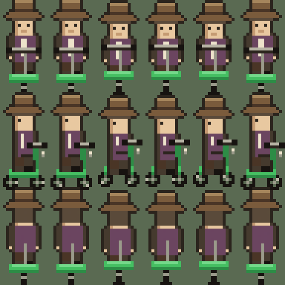
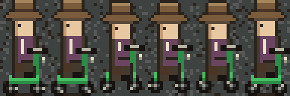
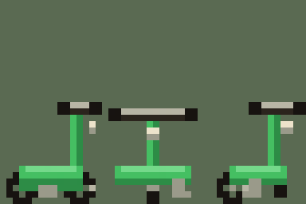

Every surface in this game is chalked enamel, worn asphalt, or faded paint. The scooter is injection-moulded plastic and it is the wrong colour for everywhere it goes. That is the point — it's the player's object, not the town's, and it should never once look like it belongs.
Same sheet geometry as character.png — 96 × 96, six columns × three rows, 16 × 32 cells, rows in the existing order: facing camera, profile, facing away. It drops into whatever AnimatedSprite2D setup the walk cycle already uses; only the texture swaps.

The profile cycle over the new asphalt. Green against grey is the whole reason this colour was chosen — it holds up over road, grass, and concrete alike.

The player can leave it anywhere, so the parked form is a world object the player will see far more often than the riding sprite. Three views, 16 × 32 cells, standing on a kickstand.

Which view is drawn should follow the direction the player was facing when they dismounted. Cheap, and it makes the world remember what they did.
One consequence worth designing for on purpose: a player who leaves the scooter at the far end of the map has to walk back to it. Losing track of it should be a real, mild inconvenience, not something the game rescues them from.
Three new slots. The town's greens are all desaturated and yellow-leaning so they read as vegetation; these are deliberately cooler and far more saturated than anything growing in it. Placed on grass, the scooter still separates.
Chrome and tire black come from slots already in the palette. Only the three greens are new.
The headlamp is cold, not amber. Amber #f2b95c is reserved for incandescent interiors, and a modern scooter has a white LED anyway — so the lamp is a chrome housing with a cream #ede3cb lens. It also keeps the object outside the town's warm light entirely, which is the right instinct for the one thing here that isn't from 1958. It appears only on the profile and parked views; head-on there is nothing to see but the housing, so it's omitted.
Where is it acquired? "Mid-game" is all I have. Found, bought, or given by a resident all imply different art — a found scooter should probably be scuffed.
Is there a battery? Nothing here assumes one. A charge meter is a real design decision with UI attached, and I'd rather not invent it.
Does the town react? It's the only modern object in a 1958 town. Residents noticing it is free characterisation, if you want it.
Does dread touch it? Later acts swap tile variants elsewhere. A scooter found somewhere the player did not leave it would cost one sprite and no new art.